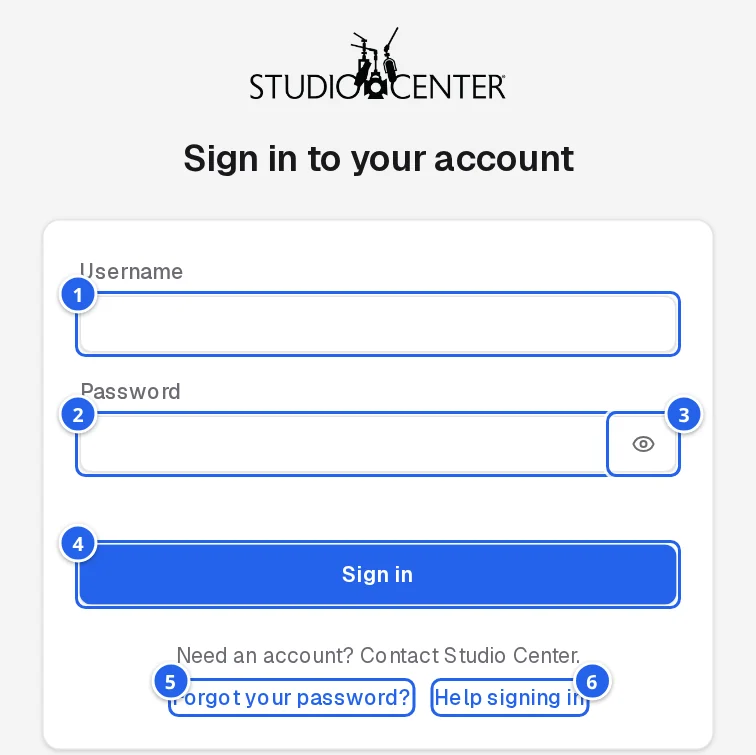
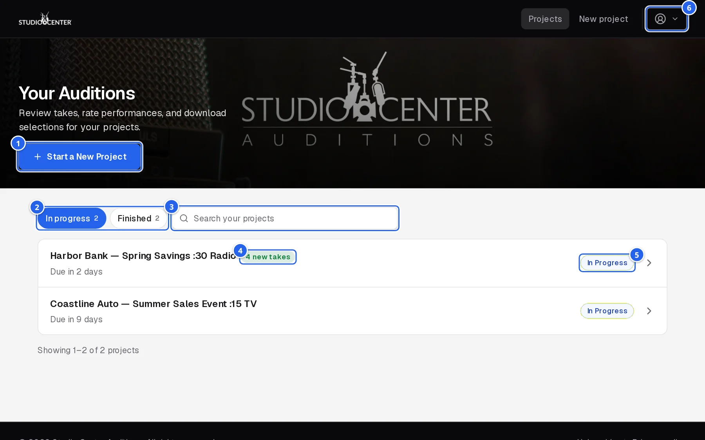
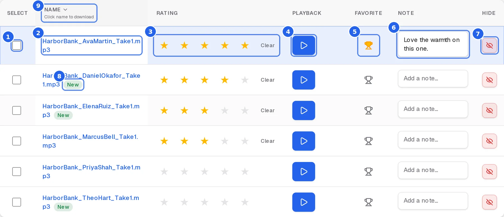
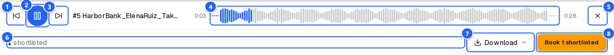
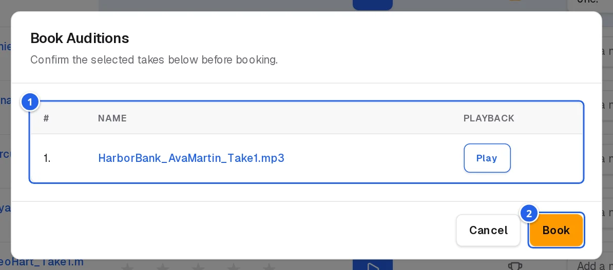
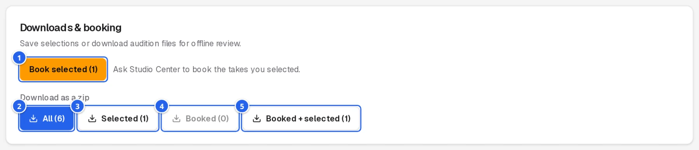
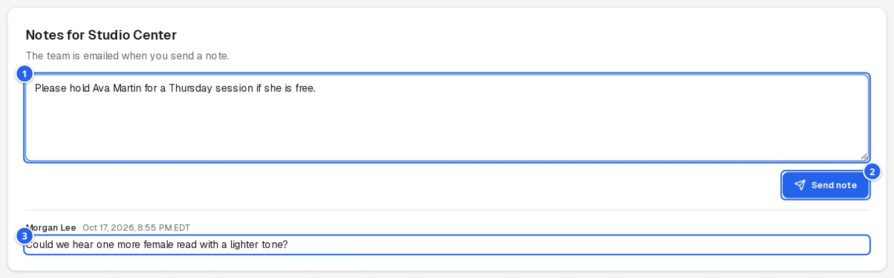
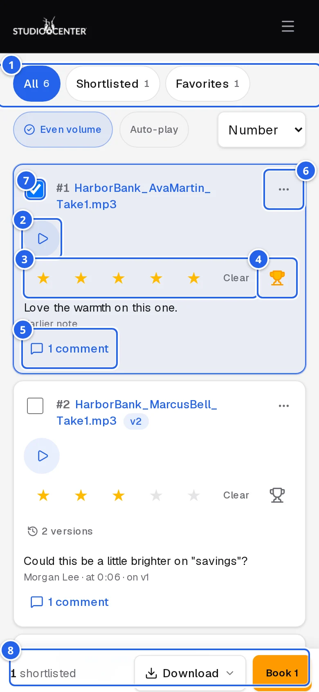
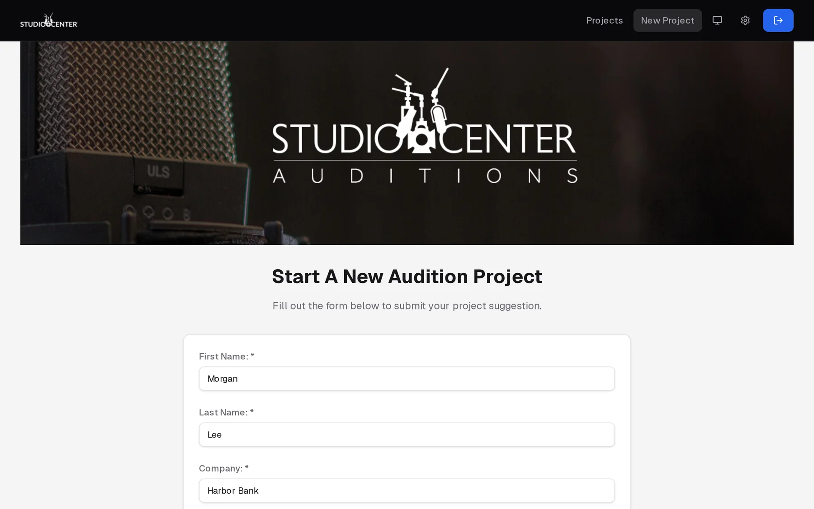
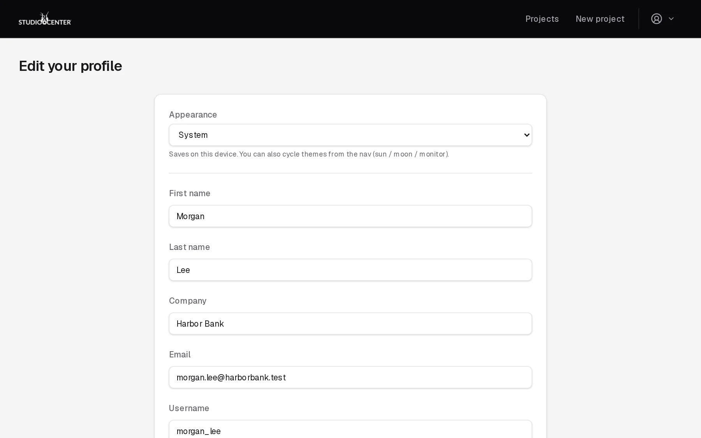

1.Signing in
Studio Center creates your account and emails you your sign-in details when your first project starts.
- Go to studiocenterauditions.com.
- Enter your username and password, then click Sign in.
- If you see a “Verify you are human” box, tick it. Most of the time the check happens invisibly.

- 1Username: the one from your welcome email (not your email address).
- 2Password.
- 3Show / hide the password as you type.
- 4Sign in.
- 5Forgot your password? Get a reset link by email.
Forgot your password
- Click Forgot your password? on the sign-in page.
- Enter your username and click Send reset link.
- Open the email and follow the link to choose a new password.
2.Your projects
After you sign in, you'll see every project you're part of.

- 1Start a New Project: ask us to cast something new (see section 10).
- 2Search by project title or status.
- 3New takes: how many auditions arrived since you last opened that project. This works on any device you sign in from.
- 4Status: In Progress while we're collecting auditions; Auditions complete once casting has closed.
Click a project to open it. Projects are listed 20 to a page; use the arrows under the list to see more.
3.Reviewing takes
Each project page lists every audition (take) we've posted for you. New takes appear throughout the day until the deadline.

- 1Select takes you want to book or download.
- 2File name: click to download that one take.
- 3Rating: click a star (1 to 5). Clear removes your rating. Ratings are yours; others on your team rate separately.
- 4Play (see Listening).
- 5Favorite: marks the take with a trophy and selects it for you.
- 6Note on this take: type, then click anywhere else to save.
- 7Hide a take that isn't a fit, to shorten the list. Use Show hidden below the list to bring hidden takes back.
- 8New: added since your last visit. A banner at the top also says how many arrived.
- 9Sort by name, rating, or favorite by clicking a column heading; click again to reverse.
4.Listening
Click Play on any take. The controls appear right away, with a spinner on the button while the file loads.

- 1Pause.
- 2Position: drag to jump to any point in the take.
- 3Stop: stops and rewinds to the start.
Starting another take stops the one that's playing, so you never hear two at once.
5.Booking talent
- Tick Select on the takes you want to book (favorites are selected automatically).
- In Downloads & booking, click Book selected.
- Check the takes in the list (you can play them again here), then click Book.

- 1The takes you're about to book.
- 2Book confirms. Cancel goes back without booking.
Booked takes are marked Booked, the project shows Auditions complete, and our team is notified right away. You'll get an email confirming your selections, and we'll contact you about scheduling.
6.Downloading files
To download one take, click its file name. To download several at once as a zip file, use Download as a zip:

- 1Book selected (see Booking).
- 2All: every take on the project.
- 3Selected: only the takes you ticked.
- 4Booked: only booked takes.
- 5Booked + selected: both together.
The number on each button is how many takes it includes. Large zips can take a moment to prepare before the download starts.
7.Notes for our team
Use Project notes at the bottom of the project page for feedback about the whole project. For feedback on one take, use that take's note field (section 3).

- 1Type your note.
- 2Save Note: the note is saved to the project and emailed to our team.
8.On your phone
Everything works on a phone. Each take is a card with the same controls:

- 1Play: while playing, the player fills the row and the stars move below.
- 2Rate.
- 3Favorite; the eye icon next to it hides the take.
- 4Select.
- 5The bar at the bottom: Book and Download selected without scrolling.
9.Keyboard shortcuts
On a computer, you can review a project without the mouse. The highlighted row is the one the keys act on.
| Key | Does |
|---|---|
| ↑ ↓ | Move between takes |
| Space | Select or unselect the take |
| F | Favorite or unfavorite |
| 1 to 5 | Rate the take; 0 clears your rating |
Shortcuts pause while you're typing in a note.
10.Requesting a new project
- Click Start a New Project (or New Project in the top bar).
- Fill in your name, company, phone, and email, and describe what you need: the spot, length, tone, and deadline.
- Attach a script if you have one (optional), then click Submit.

11.Your account
Click the gear icon in the top bar to open Edit your profile:
- Appearance: light, dark, or match your device (saved on that device). The monitor icon in the top bar switches it too.
- Name, company, and email: keep these current so our emails reach you.
- Password: we'll email you a link to set a new one.

To sign out, click the arrow button at the far right of the top bar.
12.Troubleshooting
Sign-in says to wait
After several sign-in attempts in a row, sign-in pauses for a minute to protect your account. Wait a minute, then try again, or reset your password.
A project is missing
You only see projects you've been added to. If a colleague can see a project you can't, ask your Studio Center producer to add you.
A take won't play
Check your device's volume and that the browser tab isn't muted, then try again. If one particular take never plays, let us know in the project notes.
Still stuck?
Contact your Studio Center producer, or visit studiocenter.com.